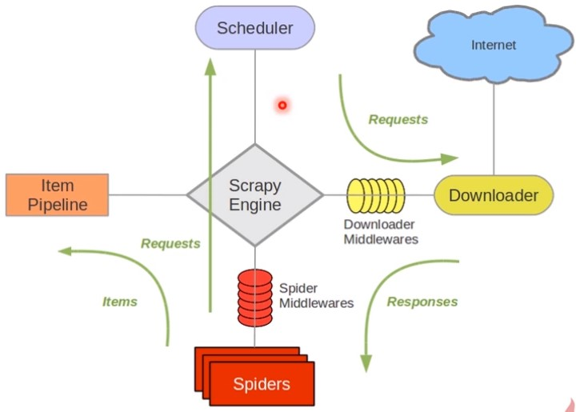

[TOC]
import ur1lib2
#直接请求
response=urllib2.urlopen(http://www.baidu.com')
#获取状态码，如果是2ee表示获取成功
print response.getcode()
#读取内容
cont=response.read()
#创建Request对象
request=ur11ib2.Request(ur1)
#添加数据
request.add_data(a'，‘12)
#添加http的header request.add_header(‘User-Agent'，‘Mozilla/5.e')
#发送请求获取结果
response=ur1lib2.urlopen(request)
import ur1lib2，cookielib
#创建cookie容器
cj=cookielib.CookieJar()
#创建1个opener opener=ur11ib2.build_opener(ur1lib2.HTTPCookieProcessor(cj)
#给ur11ib2安装opener ur1lib2.install_opener(opener)
#使用带有cookie的ur11ib2访问网页
response=url1ib2.urlopen("http://www.baidu.com/")
三种方法的示例：
import urllib2
ur1="http://www.baidu.com"
print'第一种方法’
response1=ur11ib2.urlopen(ur1)
print responsel.getcode()
print len(response1.read())
print“第二种方法”
request=ur1lib2.Request(url)
request.add_header("user-agent"，"Mozilla/5.e")
response2=ur11ib2.urlopen(request)
print response2.getcode()
print len(response2.read())
print‘第三种方法’
cj=cookielib.CookieJar()
opener=ur11ib2.build_opener(ur11ib2.HTTPCookieProcessor(cj))
ur11ib2.install_opener(opener)
response3=ur11ib2.urlopen(ur1)
print response3.getcode()
print cj
print response3.read()
-安装：pip install beautifulsoup4 -测试：import bs4
from bs4 import BeautifulSoup
#根据HTML网页字符串创建Beautifulsoup对象
soup=BeautifulSoup(
html_doc，#HTML文档字符串
'html.parse', #HTML解析器
from_encoding=‘utf8' #HTML文档的编码
)
#方法：find_all(name，attrs，string)
#查找所有标签为a的节点
soup.find_all('a')
#查找所有标签为a，链接符合/view/123.htm形式的节点soup.find_all(a'，href=/view/123.htm')
soup.find_all('a'，href=re.compile(r"/view/\d+\.html"))
#查找所有标签为div，class为abc，文字为Python的节点
soup.find_all(div'，class_=‘abc'，string=‘Python')
#得到节点：<a href=‘1.htm12>Python</a>
#获取查找到的节点的标签名称
node.name
#获取查找到的a节点的href属性
node[‘href2]
#获取查找到的a节点的链接文字
node.get_text()
soup=BeautifulSoup ( html_doc，‘html.parser'，from_encoding='utf-8' )
print‘获取所有的链接”
1inks=soup.find_all ( 'a' )
for link in links：print link.name，link['href']，link.get_text ( )
print‘获取Lacie的链接’
link node =soup.find ( 'a'，href='http://example.com/Lacie' )
print link_node.name，link_node['href']，link_node.get_text ( )
print '正则匹配'
link_node=soup.find('a',href=re.compile(r"ill"))
print‘获P段落文字
pnode=soup.find ( 'p'，class_="title" )
print p_node.name，p_nodel.get_text ( )

scrapy爬虫项目开发分成四步：新建项目、明确目标、制作爬虫、存储内容
pip install scrapy 编译Twised时需要Visual C++ Build Tools，可以在这来下载安装：Microsoft Visual C++ Build Tools
scrapy startproject doubanscrapy genspider douban_spider movie.douban.com分析https://movie.douban.com/top250，需要抓取序号、电影名、导演、演员、星级、评价数、描述等。
# 序号
serial_number = scrapy.Field()
# 电影的名称
movie_name = scrapy.Field()
# 电影的介绍
introduce = scrapy.Field()
# 星级
star = scrapy.Field()
# 电影的评论数
evaluate = scrapy.Field()
# 电影的描述
describe = scrapy.Field()
class DoubanSpiderSpider(scrapy.Spider):
# 爬虫名称
name = 'douban_spider'
# 允许的域名
allowed_domains = ['movie.douban.com']
# 入口url，扔到调度器里面去
start_urls = ['https://movie.douban.com/top250']
def parse(self, response):
print(response.text)
进入douban\spiders目录，执行：scrapy crawl douban_spider
windows下运行会出现错误：
Could not find a version that satisfies the requirement win32api (from versions: ) No matching distribution found for win32api 解决办法：
pip install pypiwin32
远程运行，新建main.py
from scrapy import cmdline
cmdline.execute('scrapy crawl douban_spider'.split())